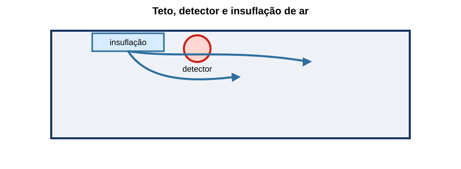
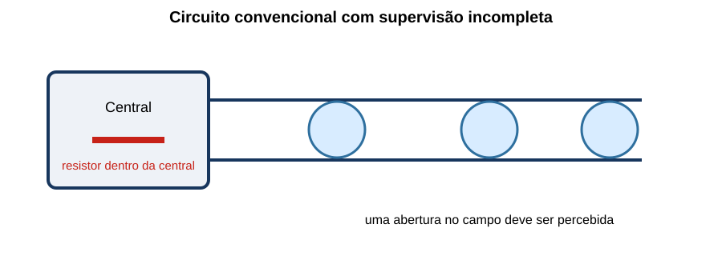
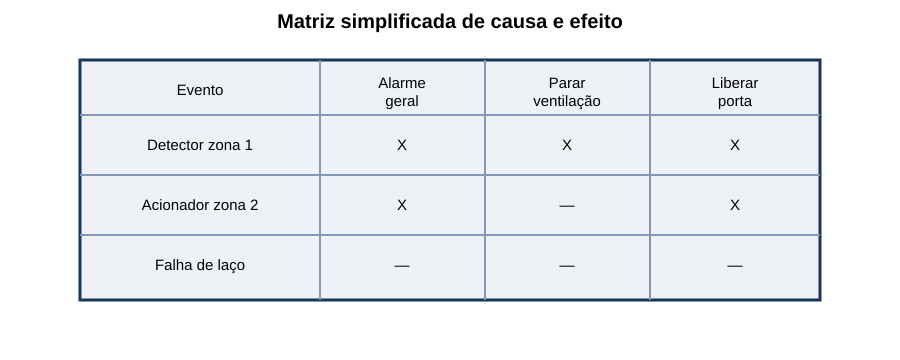

Detecção e Alarme de Incêndio (SDAI)
20 questões autorais calibradas pelo padrão IDECAN • Bloco Prata
| Questão 01 | Arquiteturas de SDAI • Endereçável e Convencional |
Em um edifício extenso, a equipe precisa identificar na central qual detector específico entrou em alarme e registrar eventos individualmente. A solução mais diretamente compatível é:
A) sistema convencional com todos os pavimentos no mesmo circuito, sem subdivisão.
B) circuito exclusivo de sirenes, usado também para localizar detectores.
C) sistema endereçável com dispositivos identificados e programação coerente com as zonas.
D) acionadores manuais ligados diretamente à alimentação, sem comunicação com a central.
Gabarito Comentado: Alternativa C
No sistema endereçável, cada dispositivo possui identificação lógica, permitindo indicar o ponto que gerou alarme ou falha. O projeto ainda deve organizar zonas, mensagens e planta de localização; endereço eletrônico não substitui setorização compreensível.
Análise das armadilhas:Associar quantidade de fios à capacidade de localização ou imaginar que circuito de aviso também identifica o detector.Como pensar nesta questão:Pergunte qual informação a central deve fornecer: zona coletiva ou ponto individual.
| Questão 02 | Seleção de Detectores • Ambiente |
Uma cozinha industrial produz vapor e aerossóis em operação normal, mas também apresenta risco de elevação anormal de temperatura. Para reduzir alarmes indesejados sem abandonar a detecção automática, deve-se:
A) avaliar detector térmico adequado e seu critério de atuação, considerando risco, ventilação e evolução esperada do incêndio.
B) instalar detector de fumaça diretamente sobre a fonte de vapor e aumentar sua sensibilidade.
C) retirar toda detecção automática e depender exclusivamente de percepção humana.
D) usar detector de chama atrás de obstáculos opacos, independentemente do campo de visão.
Gabarito Comentado: Alternativa A
A tecnologia deve responder ao fenômeno do incêndio e tolerar condições normais do ambiente. Em local com vapor/aerossol, detector de fumaça mal selecionado pode gerar alarmes indesejados; detecção térmica pode ser apropriada após análise de risco e desempenho.
Análise das armadilhas:Escolher o detector mais sensível sem analisar interferentes ou eliminar proteção em vez de controlar a causa do alarme.Como pensar nesta questão:Liste primeiro fenômeno esperado, interferentes, velocidade necessária e geometria do ambiente.
| Questão 03 | Detectores de Fumaça • Fluxo de Ar |
A planta mostra detector instalado junto à insuflação de ar.

O principal problema é:A) a insuflação aumenta obrigatoriamente a concentração de fumaça no detector.
B) o detector passa a funcionar como dispositivo de controle da vazão do ar-condicionado.
C) a corrente de ar elimina a necessidade de qualquer outro detector no recinto.
D) o fluxo pode diluir ou desviar a fumaça e retardar a detecção, exigindo revisão do posicionamento.
Gabarito Comentado: Alternativa D
A movimentação de ar altera o transporte de fumaça. Próximo à insuflação, ela pode ser desviada ou diluída antes de alcançar a câmara; junto ao retorno, podem surgir outras concentrações. O posicionamento deve considerar o padrão real de fluxo.
Análise das armadilhas:Presumir que teto uniforme significa distribuição uniforme de fumaça ou que mais ventilação sempre acelera detecção.Como pensar nesta questão:Trace o caminho provável da fumaça desde a origem até o teto e veja como insuflação, retorno e obstáculos o modificam.
| Questão 04 | Circuito Convencional • Supervisão |
No circuito ilustrado, o resistor de fim de linha está instalado dentro da central, e não após o último dispositivo.

Qual consequência é mais provável?A) a central passa a localizar individualmente cada dispositivo convencional.
B) uma interrupção nos condutores externos pode deixar de ser corretamente supervisionada.
C) a corrente de alarme dobra em todos os acionadores manuais.
D) o resistor transforma automaticamente o circuito em classe tolerante a uma falta.
Gabarito Comentado: Alternativa B
O elemento de fim de linha deve representar a continuidade até o extremo do circuito. Se fica na central, uma abertura no cabo de campo pode não alterar a condição vista pelo painel, mascarando a falha.
Análise das armadilhas:Tratar o resistor como simples limitador de corrente sem função de supervisão do percurso.Como pensar nesta questão:Pergunte se a corrente de supervisão realmente percorre todo o cabo que se deseja monitorar.
| Questão 05 | Estados do Sistema • Alarme e Falha |
A central indica abertura de circuito de um laço, sem qualquer detector atuado. Essa condição deve ser apresentada como:
A) estado normal, pois circuito aberto impede corrente e reduz consumo.
B) alarme geral confirmado, iniciando automaticamente todas as ações sem distinção.
C) falha ou avaria distinta do sinal de incêndio, com indicação que permita localizar a região afetada.
D) desativação permanente, que dispensa reparo e registro.
Gabarito Comentado: Alternativa C
Abertura de circuito compromete a disponibilidade do sistema e deve gerar indicação de falha, diferente do alarme de incêndio. A diferenciação evita evacuação por defeito e, ao mesmo tempo, impede que a perda de proteção permaneça oculta.
Análise das armadilhas:Considerar ausência de corrente como situação segura ou tratar qualquer indicação da central como incêndio.Como pensar nesta questão:Classifique o evento: fogo detectado, defeito do sistema, supervisão de equipamento ou desabilitação controlada.
| Questão 06 | Fonte Secundária • Dimensionamento |
Um SDAI consome 1,2 A em supervisão e 5,0 A em alarme. Considerando 24 h em supervisão, 15 min em alarme e margem de projeto de 20%, qual capacidade mínima calculada?
A) 30,05 Ah.
B) 34,80 Ah.
C) 40,85 Ah.
D) 36,06 Ah.
Gabarito Comentado: Alternativa D
A carga é $1{,}2\cdot24+5{,}0\cdot0{,}25=30{,}05\,Ah$. Com 20%: $30{,}05\cdot1{,}20=36{,}06\,Ah$. A seleção comercial também considera envelhecimento, temperatura, regime e critérios do fabricante/norma.
Análise das armadilhas:Usar 15 horas em vez de 15 minutos, esquecer a margem ou aplicar corrente de alarme às 24 horas.Como pensar nesta questão:Converta todos os tempos para horas, some os regimes e aplique a margem ao total.
| Questão 07 | Acionador Manual • Função |
Em um corredor de saída, um usuário percebe uma situação de incêndio antes dos detectores automáticos. O acionador manual serve para:
A) permitir o envio intencional do sinal à central por uma pessoa, integrando-se à lógica de alarme.
B) desligar localmente todos os detectores para evitar duplicidade de eventos.
C) substituir permanentemente avisadores sonoros e visuais do pavimento.
D) alimentar diretamente bombas e ventiladores sem controle ou supervisão da central.
Gabarito Comentado: Alternativa A
O acionador manual permite que uma pessoa comunique a emergência ao sistema. Sua atuação deve ser identificada e processada pela central conforme a matriz de causa e efeito. Ele não substitui avisadores nem deve comandar cargas sem lógica e interfaces apropriadas.
Análise das armadilhas:Confundir detecção/acionamento com aviso aos ocupantes ou com acionamento direto de potência.Como pensar nesta questão:Separe entrada do sistema, processamento na central e saídas de alarme/controle.
| Questão 08 | Avisadores • Ambiente Ruidoso |
Em casa de máquinas, o ruído normal pode mascarar a sirene. A solução deve:
A) aumentar indiscriminadamente o nível sonoro em toda a edificação.
B) instalar apenas placa estática, pois sinalização permanente equivale a alarme.
C) combinar avisadores sonoros e visuais adequados ao ambiente e verificar sua percepção nas condições reais.
D) transferir a responsabilidade de aviso aos trabalhadores, sem dispositivo local.
Gabarito Comentado: Alternativa C
Em ambiente com ruído elevado, aviso visual complementa o sonoro. O projeto deve verificar cobertura e percepção no cenário operacional, considerando usuários e características do recinto, sem produzir nível excessivo em outras áreas.
Análise das armadilhas:Escolher um único meio de aviso sem ensaio funcional ou confundir sinalização de orientação com sinal de emergência.Como pensar nesta questão:Pergunte como cada ocupante perceberá o alarme com máquinas, portas e iluminação em condições reais.
| Questão 09 | Detectores Lineares • Aplicação |
Um galpão possui grande altura, teto livre e extensos vãos. Em comparação com muitos detectores pontuais, pode ser pertinente avaliar:
A) detector térmico enterrado no piso, independentemente do risco.
B) detector linear de fumaça por feixe, com trajetória livre, alinhamento e condições ambientais verificadas.
C) detector de chama sem campo de visão da área protegida.
D) acionador manual como única detecção automática do volume superior.
Gabarito Comentado: Alternativa B
Detectores lineares por feixe podem cobrir grandes espaços, mas exigem visada, alinhamento, estabilidade estrutural e análise de estratificação, poeira e interferências. A escolha não é automática apenas pela altura.
Análise das armadilhas:Selecionar tecnologia pelo tamanho do ambiente sem verificar o fenômeno e as limitações ópticas.Como pensar nesta questão:Associe geometria ampla a uma tecnologia possível e depois teste cada condição que pode impedir seu funcionamento.
| Questão 10 | Detectores de Chama • Campo de Visão |
Em área com risco de chama de rápida evolução, dois equipamentos altos bloqueiam parte da visão do detector. A medida adequada é:
A) considerar apenas a distância horizontal, pois obstáculos não afetam radiação.
B) aumentar o tempo de confirmação até que a chama ultrapasse os equipamentos.
C) substituir automaticamente todos os detectores por térmicos, sem analisar o risco.
D) reposicionar ou adicionar detectores para eliminar sombras, respeitando alcance, ângulo e interferentes.
Gabarito Comentado: Alternativa D
Detector de chama precisa receber radiação dentro de seu campo de visão. Obstáculos criam zonas de sombra; alcance nominal não vence barreira opaca. Reposicionamento e cobertura sobreposta devem ser verificados conforme a tecnologia.
Análise das armadilhas:Confundir alcance com capacidade de atravessar obstáculos ou compensar geometria ruim por atraso.Como pensar nesta questão:Desenhe cones de visão e procure volumes que nenhum detector enxerga.
| Questão 11 | Laço Endereçável • Isoladores |
Em um laço fechado, um curto-circuito entre dois isoladores é detectado. Quando o sistema é corretamente projetado, espera-se que:
A) os isoladores seccionem o trecho defeituoso, preservando a maior parte possível do laço e indicando a falha.
B) todos os dispositivos permaneçam ativos inclusive no trecho em curto, sem qualquer isolamento.
C) a central interprete o curto exclusivamente como alarme de incêndio.
D) o curto aumente a tensão disponível nos dispositivos mais distantes.
Gabarito Comentado: Alternativa A
Isoladores limitam o impacto do curto ao segmento entre pontos de isolamento, permitindo comunicação pelo caminho remanescente quando a topologia e a central suportam essa operação. O trecho isolado continua indisponível e deve ser reparado.
Análise das armadilhas:Interpretar tolerância a falha como ausência de perda ou como dispensa de manutenção.Como pensar nesta questão:Localize a falta, os isoladores adjacentes e o caminho alternativo de comunicação.
| Questão 12 | Matriz de Causa e Efeito • Integrações |
A matriz mostra eventos e comandos do sistema.

No comissionamento, a verificação mais robusta é:A) testar apenas as sirenes, pois as demais saídas não pertencem ao SDAI.
B) estimular cada causa representativa e confirmar saídas, realimentações, temporizações e estados seguros previstos.
C) forçar relés diretamente, sem verificar se a central processa os eventos de entrada.
D) conferir somente a programação impressa, dispensando testes das interfaces reais.
Gabarito Comentado: Alternativa B
A matriz é requisito funcional que precisa ser testado de ponta a ponta: dispositivo de entrada, lógica, interface, equipamento comandado e confirmação. Acionar apenas o relé ignora parte importante da cadeia.
Análise das armadilhas:Confundir teste de componente com teste integrado ou aceitar documento como prova de execução.Como pensar nesta questão:Para cada linha da matriz, percorra causa → lógica → comando → efeito real → retorno de estado.
| Questão 13 | Central • Localização e Operação |
A central foi instalada em depósito trancado, sem vigilância, planta de localização ou acesso rápido para a equipe de emergência. Mesmo funcionando eletricamente, a solução é inadequada porque:
A) o depósito reduz automaticamente a autonomia das baterias à metade.
B) toda central deve ficar necessariamente dentro da casa de bombas.
C) operação, identificação do evento, vigilância e acesso seguro fazem parte do desempenho do sistema.
D) a central só pode indicar alarmes quando instalada ao ar livre.
Gabarito Comentado: Alternativa C
A central precisa ser acessível a operadores e equipes responsáveis, permitir rápida interpretação e permanecer em ambiente compatível com sua supervisão e manutenção. Funcionamento eletrônico isolado não garante resposta operacional.
Análise das armadilhas:Avaliar apenas alimentação e comunicação, ignorando a interação humana no evento.Como pensar nesta questão:Simule quem recebe o sinal, como localiza a origem e quanto tempo leva para agir.
| Questão 14 | Cabeamento • Integridade e Segregação |
Em reforma, a equipe propõe lançar circuitos do SDAI junto a cabos de potência, usar emendas ocultas e alterar o tipo de cabo sem documentação. A fiscalização deve:
A) aceitar se houver espaço físico no eletroduto.
B) dispensar supervisão elétrica porque o cabo ficará protegido pelo forro.
C) aprovar apenas com base na cor vermelha da isolação.
D) verificar integridade, segregação, identificação, emendas e compatibilidade antes de autorizar.
Gabarito Comentado: Alternativa D
A rota e o cabo influenciam sobrevivência, interferência, manutenção e supervisão. Cor ou espaço não comprovam atendimento. Alterações devem ser tecnicamente avaliadas e registradas, mantendo compatibilidade com equipamentos e requisitos aplicáveis.
Análise das armadilhas:Reduzir especificação à cor externa ou assumir que ocultação protege contra todas as falhas.Como pensar nesta questão:Siga o circuito completo e avalie ambiente, interferência, fogo, acesso, identificação e supervisão.
| Questão 15 | Alarmes Indesejados • Investigação |
Um detector de fumaça dispara repetidamente no início da limpeza noturna. A resposta adequada é:
A) desabilitar permanentemente a zona para evitar novas ocorrências.
B) investigar interferentes, fluxo de ar, localização e histórico, corrigindo a causa sem retirar a proteção.
C) trocar a sirene por modelo mais silencioso, mantendo os disparos.
D) aumentar o atraso até o fim do turno, sem analisar o fenômeno detectado.
Gabarito Comentado: Alternativa B
Alarmes indesejados devem ser tratados por análise de causa: interferente, detector inadequado, posição, contaminação, programação ou procedimento operacional. Desabilitar permanentemente cria área desprotegida.
Análise das armadilhas:Combater o aviso, e não a causa, ou usar atraso como solução universal.Como pensar nesta questão:Correlacione horário, atividade, ambiente e dispositivo antes de alterar o projeto.
| Questão 16 | Comissionamento • Abrangência |
Foram instalados 160 detectores. A contratada testa somente 16, escolhidos por conveniência, e solicita aceite integral. Para comissionar o sistema, deve-se:
A) testar funcionalmente os dispositivos e interfaces conforme o plano e os requisitos aplicáveis, registrando identificação e resultado.
B) aceitar a amostra porque 10% sempre comprova funcionamento de todos os dispositivos.
C) testar apenas a central, pois ela supervisiona automaticamente sensibilidade e posição física.
D) substituir testes por certificados de compra dos detectores.
Gabarito Comentado: Alternativa A
Comissionamento comprova instalação e função de cada componente e interface conforme critérios aplicáveis. Supervisão elétrica não demonstra que fumaça alcança o detector, que o endereço está correto ou que a saída comandada atua.
Análise das armadilhas:Transferir lógica de amostragem de recebimento de materiais para teste funcional do sistema instalado.Como pensar nesta questão:Pergunte quais falhas individuais poderiam permanecer ocultas mesmo com a central em estado normal.
| Questão 17 | Manutenção • Registro e Isolamento |
Durante manutenção, uma zona precisa ser temporariamente desabilitada. A conduta correta inclui:
A) desabilitar sem informar ninguém e reabilitar na próxima visita programada.
B) silenciar apenas o buzzer interno e considerar a zona protegida.
C) apagar o histórico de falhas para evitar confusão com o evento de manutenção.
D) registrar autorização, período, área afetada, medidas compensatórias e confirmar a reabilitação ao final.
Gabarito Comentado: Alternativa D
Desabilitação reduz a proteção e deve ser controlada: motivo, responsável, tempo, comunicação, medidas compensatórias e restauração verificada. O histórico deve permanecer rastreável.
Análise das armadilhas:Tratar desabilitação como simples comando de software sem consequência operacional.Como pensar nesta questão:Sempre responda: quem autorizou, o que ficou indisponível, como o risco foi compensado e quem confirmou o retorno.
| Questão 18 | Queda de Tensão • Circuito de Sirenes |
Um circuito de avisadores em 24 V conduz 2,0 A. A resistência total de ida e volta até o ponto crítico é 1,5 Ω. A tensão aproximada nesse ponto é:
A) 18 V.
B) 20 V.
C) 21 V.
D) 22 V.
Gabarito Comentado: Alternativa C
A queda é $\Delta V=I R=2{,}0\cdot1{,}5=3{,}0\,V$. Logo, $V_c=24-3=21\,V$. Esse valor deve ser comparado à faixa operacional dos avisadores na condição de alarme e de fonte secundária.
Análise das armadilhas:Usar apenas resistência de ida, somar a queda à fonte ou ignorar que a bateria pode ter tensão diferente da nominal.Como pensar nesta questão:Calcule a tensão no dispositivo mais desfavorável e compare com seu limite, não apenas com a tensão da central.
| Questão 19 | Sistemas sem Fio • Supervisão |
Em solução por rádio, a ausência de cabeamento entre dispositivos não elimina a necessidade de:
A) endereçamento físico por resistor de fim de linha em cada antena.
B) supervisionar comunicação, bateria, integridade e compatibilidade, tratando perda de enlace como falha.
C) qualquer teste, pois o rádio confirma automaticamente presença de fumaça.
D) alimentação principal em corrente alternada para cada detector portátil.
Gabarito Comentado: Alternativa B
Meio sem fio muda a transmissão, mas não elimina falhas de comunicação, energia, interferência ou dispositivo. O sistema deve indicar perda de enlace e condição de bateria conforme os requisitos da solução.
Análise das armadilhas:Interpretar “sem fio” como “sem infraestrutura, manutenção ou supervisão”.Como pensar nesta questão:Substitua mentalmente o cabo pelo enlace de rádio e pergunte como cada falha será detectada.
| Questão 20 | Aceitação Integrada • Cenário Final |
Após testes individuais, a equipe não verificou a sequência completa entre detector, central, liberação de porta, parada de ventilação e aviso aos ocupantes. Antes do recebimento, deve:
A) testar cenários representativos de ponta a ponta, incluindo falhas, realimentações, temporizações e retorno ao estado normal.
B) considerar os certificados individuais suficientes para todas as integrações.
C) energizar os relés simultaneamente, sem observar os equipamentos comandados.
D) retirar as integrações da documentação para simplificar a manutenção futura.
Gabarito Comentado: Alternativa A
Sistemas integrados podem falhar nas interfaces mesmo quando cada componente funciona isoladamente. O aceite deve validar sequências reais, estados seguros, retorno de posição, temporizações e restauração, com registros rastreáveis.
Análise das armadilhas:Somar aprovações isoladas e presumir que o comportamento conjunto está comprovado.Como pensar nesta questão:Use a matriz de causa e efeito como roteiro e teste a cadeia completa em condições normais e de falha.